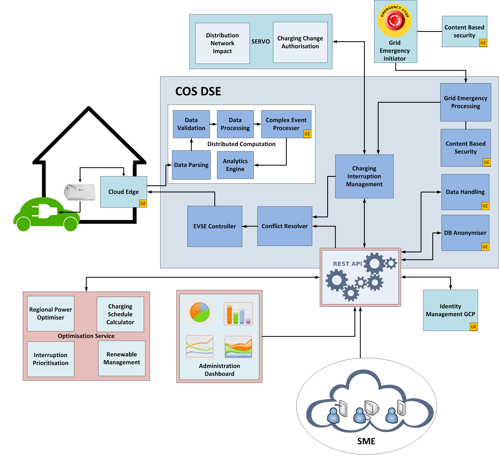

WP5 Charging Optimisation System (COS) DSE¶

Copyright¶
Copyright © 2014 by FINESCE
Preface¶
Within this document you find a self-contained open specification of the FINESCE WP5 Charging Optimisation System (COS) Domain Specific Enabler (DSE).
Please consult the appropriate pages on the FINESCE website in order to understand the complete context of the related FINESCE trials and this DSE.
T&Cs¶
Overview¶
The WP5 Stream I team have developed an active demand dispatch system as a FINESCE domain specific enabler. This system optimises charging profiles for available Electric Vehicles (EV)s on the grid, by taking input of power generation forecasts from system operators‘ web sites and using request-response message exchange patterns with live EVSE's connected to the grid to create an optimised load scheduler every 15 minutes.
Target Usage¶
There are several major applications of this concept in the control of electricity grids, including:
- Develop flexible and rapid responses to grid emergencies while minimising customer impact;
- Balancing volatile renewable supply and EV demand, to minimise CO2 emissions;
- Manipulate inter-regional power flows to avoid the high costs of future power link upgrades;
- Provide energy markets with an additional control capability;
- Offer individual customers and service providers more information and control of their electric vehicle charging applications.
DSE Description¶
The need to integrate renewable power sources into the electricity grid is a global imperative. Today, balance can only be maintained by rapidly altering conventional power outputs to compensate for changes in renewables. In addition where wind power is excessive, it may have to be constrained, which is wasteful and incurs significant operator costs. Given existing emission commitments, both of these issues will only become more acute over the next two decades. A radical solution to this dilemma, and one that will also support long term renewable targets, is to invert the normal approach and to make relatively static demand level more dynamic and track the supply.
There are a number of important aspects to this including: regional power balancing, balancing of renewal supply, responding to electricity market signals, and supply-demand balancing services supplied directly to power system operators.
Regarding regional power balancing, the overall objective is to manage EV charging processes in a region or amongst a group of facilities to achieve a requested target power profile subject to distribution network constraints. Such constraints must be monitored by the DSO and respected by the charging optimisation system.
The COS DSE ensures that the large-scale coordinated interruption and de-interruption of electric vehicle charging will not disrupt the local distribution network.
Basic Concepts¶
The functional model presented in this section aims to encompass the whole of the charging optimisation space, as well as related functions such as for example TSO/DSO power system management, renewable generation (eg. wind farms and solar power plants) management, and energy market management functions.
The trial will focus only on those parts of the charging optimisation function that are interesting and realistic to implement, are relevant for Generic Enabler application, and will yield valuable result when scaled to the commercial level.
Basic Design Principles¶

| Sub-function | Description |
| Grid Emergency Processing | This is a new component to the COS DSE. The Grid Emergency Processing component listens for Grid Emergency events being transmitted by the Grid Emergency Initiator (DSO/TSO). Requests are first decrypted using the Content Based Security generic enabler, before being validated. When such a message has been validated as authentic, the Grid Emergency Processing component will initiate a grid emergency within the charge optimisation system by requesting all EVSEs cease charging immediately. |
| EVSE Controller | This component connects to an individual EVSE in order to control it, and also will be used retrieve the data blocks of information being transmitted by the EVSE. |
| EVSE Data Parser | This component retrieves raw data from the message queue on the message bus, will parse the data and pass to the Data Validator for validation and integrity check. |
| EVSE Data Validator | The contents of the parsed data block (from EVSE Data Parser) are validated against the checksum attached to the data block by this component. |
| Data Processing and Analytics Engine | The charge optimisation system makes use of a distributed computation platform, Apache Storm along with the Complex Event Processing generic enabler in order to process the massive and continuous stream of data entering the system from the trial EVSEs. These components allow processing tasks such as aggregation and analysis to be performed before persisting the data within the system. |
| Web Application API | The Web Application API component is built using a RESTful architecture style and offers an interface to allow partners / SMEs to develop applications and software in order to interact with or even augment and extend the Charge Optimisation Systems core features and functionality. It is possible to retrieve, analyse and graph charge profiles for individual EVSEs, or access current and historic regional renewables supply data, along with forecasted demand. e.g. The Optimisation Service is itself an application built using this Web Application API, as is the administration dashboard application. |
| Conflict Resolver | The responsibilities of the Conflict Resolver is that of EVSE communication exception handling within the COS. e.g. When a charge optimisation request is issued, the conflict resolver will ensure that requests will not be sent to an EVSE if it does not currently have a car connected. |
| Regional Power Optimizer | Optimises a schedule for a given number of controllable loads to follow a given (aggregated) power profile with a given forecast duration. |
| Charging Interruption Management | This is a new component to the COS DSE. The charging interruption management component is responsible for handling the conversion of charge optimisation requests into charging change authorisation requests for the ESB Servo system. Servo will investigate the distribution network impact of such a change, and respond to the charging interruption management component with either a go or no go response. If Servo denies a change, the charging interruption management system will inform the Optimisation System with the response from Servo. Alternatively if Servo responds favourably, the charging interruption management component will enact the optimisation request by forwarding the particular changes for each individual EVSE to the Conflict Resolver. |
| FI-WARE Data handling GE | The Data handling GE is used to ensure the privacy of sensitive data. In the case of the Charging Optimisation System the sensitive data in question relates to data belonging to the EVSE. This GE uses a Sticky Policy which is written in Privacy Policy Language. The policy provides control over a) who can access this data and b) the duration for which this data can be accessed. |
| FI-WARE DB Anonymiser GE | This GE is currently being integrated with the COS DSE system to evaluate the adequateness (in maintaining privacy and anonymisation) of a disclosure policy to be used to disclose a dataset from the COS DSE to third parties such as SMEs. This will ensure any shared data cannot be reconstructed to extract PII |
| FI-WARE Identity Management GCP GE | The Identity Management GE provides customer administration as well as identity management, authentication and authorization services. The GE implements security standards such as OAuth and OpenId. The GE has been selected to provide authentication to clients who require to access data in the COS DSE system. The Identity Management GCP GE is used in the Charging Optimisation System as a means for authenticating its Web API users. As the API provides access to data stored within the COS, security is a major factor and as such it is of upmost importance that persons allowed to access this data can be verified in a controlled and reliable manner. |
| FI-WARE Content Based Security GE | This GE is integrated locally and is being used by the developers of the COS DSE system in order to support the confidentiality of grid emergency messages between TSOs/DSOs and the COS DSE. A second instance of the content based security will be required to be hosted on the TSO/DSO side of the connection in a grid initiator application which generates the initial grid emergency messages. |
| FI-WARE Complex Event Processing GE | The CEP GE analyses event data in real-time, generates immediate insight and enables instant response to changing conditions. While standard reactive applications are based on reactions to single events, the CEP GE reacts to situations rather than to single events. A situation is a condition that is based on a series of events that have occurred within a dynamic time window called processing context. Situations include composite events (e.g., sequence), counting operators on events (e.g., aggregation) and absence operators.. Due to the data protection requirements for the COS DSE it is considered necessary to integrate a localised instance of the Complex Event Processing GE which will work alongside and compliment the Apache Storm stream processor of the COS DSE |
| FI-WARE Cloud Edge GE | This GE is deployed as a network bridging application in order to connect an electric vehicle charge equipment to the COS DSE. |
Detailed Specifications¶
The COS API which is up and available to use, allows a user to view
or control an EVSE or access various aggregated trial-site load
information e.g. aggregated EV load, renewable energy supply, etc.
This
API would open possibilities of integration of EV control into
different end user applications (mobile/web applications) for smart home
management, energy management, etc.
The API follows the rules of a common RESTful approach:
- Rely on HTTP/RESTful services (wherever possible) in order to address the most broad community of application developers with the popular technology
- Expose WP5 Stream I EV charging infrastructure and trial results
- Expose the COS DSE interface allowing the system to be accessible for external applications.
From a developers point of view the API it is documented in swagger and available at the API website: https://finesce.tssg.org/documentation/index.html
API Control functions¶
The base url for all requests is https://finesce.tssg.org/api/v2, and any requests using http will be redirected to https, of note a self-signed cert is used for SSL.
WP5 have implemented the following HTTP commands being used to manipulate the data controlled by the FINESCE system.- HTTP GET commands used to retrieve information from the database
- HTTP PUT commands used to update individual record in the database
- HTTP POST to add new records to the database
- HTTP DELETE to remove records from the database
The following endpoints are currently implemented in the external API system on collection resources. All calls require an auth_token to be sent with the request (This excludes the tokens endpoint). NOTE: the parameter for sending the authorisation token is "auth_token".
- Miscellaneous
- Generationplants
- Regionalaggevseenergies
- Timeslots
- Evevseconnections
- Chargingmodes
- Electricvehicles
- Estimatedsocs
- Regions
- Generationtypes
- Regionalenergies
- Evses
- Evevseconnectionstates
- Evtypes
- Stateofcharges
Re-utilised Technologies/Specifications¶
As mentioned earlier the COS DSE re-uses the FI-WARE Data Handling GE, FI-WARE DB Anonymiser GE, FI-WARE Identity Management GCP GE , FI-WARE Content Based Security GE , FI-WARE Complex Event Processing GE and FI-WARE Cloud Edge GE.
Terms and Definitions¶
| Term | Definition |
| API | Application Programming Interface |
| COS | Charging Optimisation System |
| DSE | Domain Specific Enabler |
| DSO | Distribution System Operator |
| EV | Electric Vehicles |
| EVSE | Electric Vehicle Supply Equipment |
| GE | Generic Enabler |
| TSO | Transmission System Operator |
References¶
COS_DSE__Level_Two_Functional_Diagram.png
(106 KB)

{kind=link}
wp5_cos_dse.png
(440 KB)
{kind=link}